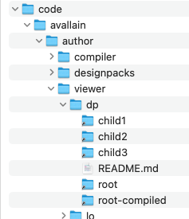

Pre-requirements
-
Development tools
- Node Version Manager
- GIT
I use HomeBrew to add these to my Mac
- An Avallain Gitlab account with access to the following repositories
-
An SHH Key pair set up with your machine and GitLab
Generate an SSH key pair (Avallain) use the ed25519 not RSA
https://git.avallain.com/help/user/ssh.md
Generate a key
ssh-keygen -t ed25519 -C “gareth.riddiford@oup.com”
Copy keytr -d '\n' < ~/.ssh/id_ed25519.pub | pbcopyTest keyssh -T git@git.avallain.comAdd your SSH key to GitLab
Node
Avallain use an old version of Node so we need to install it with NVM.
nvm install 16.1.0
nvm use 16.1.0Environment set up
Initial set up with Ambros
-
Make sure you are using node 16.1.0 by running.
nvm lsInstalled versions of Node should be listed with an arrow pointing to the version you are using.
-
Install yarn
npm install -g yarn -
Create folders
mkdir -p ~/code/avallain/tools cd ~/code/avallain/tools -
install ambros, this requires access to Avallains git repository, rather than cloning this Gareth can clone the latest version and give it to you
git clone git@git.avallain.com:tools/ambros.git cd ambros git checkout develop -
Install ambros dependencies and create a yarn link so the ambros command will be available globally
yarn install && yarn linkYou might get this error
yarn install v1.22.19 [1/4] 🔍 Resolving packages... [2/4] 🚚 Fetching packages... error An unexpected error occurred: "https://registry.yarnpkg.com/eslint/-/eslint-6.8.0.tgz: unable to get local issuer certificate". info If you think this is a bug, please open a bug report with the information provided in "/Users/riddifog/code/avallain/tools/ambros/yarn-error.log". info Visit https://yarnpkg.com/en/docs/cli/install for documentation about this command.Solutions
This is caused by the certificate authority (CA) used by your company is not recognized by Node.js. See Stack Overflow
-
Export the Cisco Umbrella Root CA certificate from Keychain Access

Add it to your home directory
-
Added the following to your .zshrc file.
export NODE_EXTRA_CA_CERTS=~/Cisco_Umbrella_Root_CA.cer
The solution is to add the CA certificate to your Node.js environment.
-
-
Create a symbolic link
ln -s ~/.config/yarn/link/@avallain/ambros/bin/cli.js ambros -
Add yarn and the link to your path so we can access them globally. In your ~/.zshrc file add the following code
Show code
# auto switch NVM # https://www.tempertemper.net/blog/using-nvm-on-macos # Adapted to handle Yarn path and parent .nvmrc resolution find_installed_node_version_upwards() { local dir="$PWD" while [[ "$dir" != "/" ]]; do if [[ -f "$dir/.nvmrc" ]]; then local version=$(<"$dir/.nvmrc" | tr -d '[:space:]') local resolved_version=$(nvm version "$version") if [[ "$resolved_version" != "N/A" ]]; then echo "$version" return fi fi dir=$(dirname "$dir") done } load-nvmrc() { local current_node="$(nvm version)" local yarn_path="$HOME/.yarn/bin" local dir="$PWD" local requested_version="" local resolved_version="" # Remove Yarn path if it's already in PATH export PATH=$(echo "$PATH" | awk -v RS=: -v ORS=: '$0 != "'"$yarn_path"'"' | sed 's/:$//') # Check for local .nvmrc if [[ -f "$dir/.nvmrc" ]]; then requested_version=$(<"$dir/.nvmrc" | tr -d '[:space:]') resolved_version=$(nvm version "$requested_version") if [[ "$resolved_version" = "N/A" ]]; then # Try to find a parent .nvmrc with an installed version local fallback_version=$(find_installed_node_version_upwards) if [[ -n "$fallback_version" && "$fallback_version" != "$requested_version" ]]; then echo "⚠️ Node version $requested_version is not available. Switching to parent version $fallback_version" nvm use "$fallback_version" > /dev/null resolved_version=$(nvm version "$fallback_version") else echo "⚠️ Node version $requested_version is not available. Continuing with $current_node" resolved_version="$current_node" fi elif [[ "$resolved_version" != "$current_node" ]]; then nvm use "$requested_version" > /dev/null fi else # No .nvmrc in current dir, try to find any installed one up the tree local fallback_version=$(find_installed_node_version_upwards) if [[ -n "$fallback_version" ]]; then if [[ "$(nvm version)" != "$(nvm version "$fallback_version")" ]]; then echo "Using parent .nvmrc version $fallback_version" nvm use "$fallback_version" > /dev/null resolved_version=$(nvm version "$fallback_version") fi elif [[ "$current_node" != "$(nvm version default)" ]]; then echo "Reverting to nvm default version" nvm use default > /dev/null fi fi # Add Yarn path only for Node 16.1.0 if [[ "$resolved_version" == "v16.1.0" ]]; then export PATH="$PATH:$HOME/.yarn/bin" export PATH="$PATH:$(yarn global bin)" echo "Yarn path added for Node $resolved_version" fi } autoload -U add-zsh-hook add-zsh-hook chpwd load-nvmrc load-nvmrc # end - auto switch NVMThis will automatically switch the version of node you are using based on .nvmrc files. It will also make the link to ambros available if you are using Node 16.1.0.
-
Add a .nvmrc in the avallain folder so all the design packs know to use 16.1.0.
echo "16.1.0" > ~/code/avallain/.nvmrcSome design packs contain an outdated .nvmrc file. Our .zshrc code will ignore .nvmrc files for versions of Node that are not installed and instead search parent folders.
-
Test ambros can be located
ln -s ~/.config/yarn/link/@avallain/ambros/bin/cli.js ambrosYou should see a number like 2.3.3
Post install
-
Create a folder for our design packs and clone them.
mkdir -p ~/code/avallain/author/designpacks cd ~/code/avallain/author/designpacks git clone https://github.com/OUP2/elt-avallain-core-dps.git child1 git clone https://github.com/OUP2/elt-avallain-core-dps.git child2This will create folders called child1 and child2 which will be used as children of the root design pack.
-
unzip a design pack from Avallain and place it at the same level as the child folders. Rename it root
-
Ask ambros to set everything up
ambros setup --clientIf it works you should see links to all the designpacks in the dp folder
I have yet to get it to work flawlessly, so check through the Manually set up section to see if everything is in place.
Alex needed to add a file called user.json in the ambros/src/config directory like this to get ambros to work. Adjust the path to suit your machine.
{"setupPath":"/Users/riddifog/code/avallain/author","client":true,"children":2}Manually corections
This is how to add an extra design pack manually but you can also use it to identify where ambros might have failed
-
Your dps should have already been added from the initial set up, but if you need an extra child dp you can do it like this.
cd ~/code/avallain/author/designpacks git clone https://github.com/OUP2/elt-avallain-core-dps.git child3 -
Go to the designpacks folder
cd ~/code/avallain/author/designpacksInside each of the folders, root, child1, child2, child3 etc.
- make a new folder called tmp,
- inside tmp make a folder called compileddp.
Add Symlinks to the DPs so they can inherit from each other
Go to the dp folder inside viewer
cd ~/code/avallain/author/viewer/dpIf ambros failed to create them you can do them all at once like this
ln -s ~/code/avallain/author/designpacks/root root ln -s ~/code/avallain/author/designpacks/root/tmp/compileddp root-compiled ln -s ~/code/avallain/author/designpacks/child1/tmp/compileddp child1 ln -s ~/code/avallain/author/designpacks/child2/tmp/compileddp child2Or if you are adding an extra child you can do it like this
cd ~/code/avallain/author/viewer/dp ln -s ~/code/avallain/author/designpacks/child3/tmp/compileddp child3
Compiling a DP
To compile a dp, first set up the inheritance chain. Starting with root make sure it contains the correct unzipped folder from avallain. Then cd into each child dp and check out the required branch
cd ~/code/avallain/author/designpacks/child1
git checkout ELT_Shared
cd ~/code/avallain/author/designpacks/child2
git checkout ELT_Shared_PrimaryOnce you have reached the the dp you want to compile and have checked out its branch, ask ambros to compile it.
ambros compileThe compiled design pack will appear inside the childs tmp/compileddp folder.
If the DP fails to compile you should see the location were it failed in the terminal